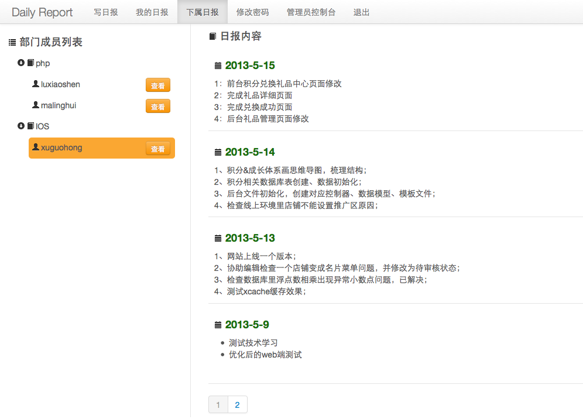
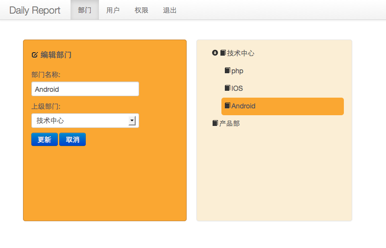
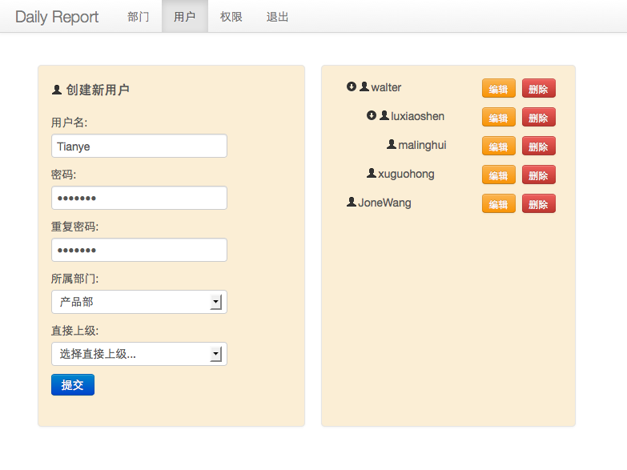
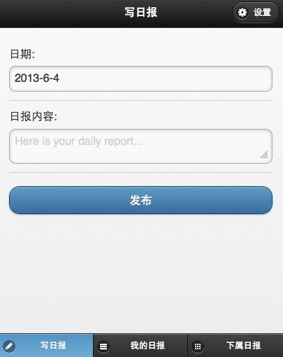
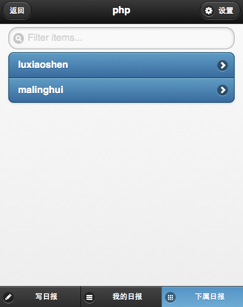
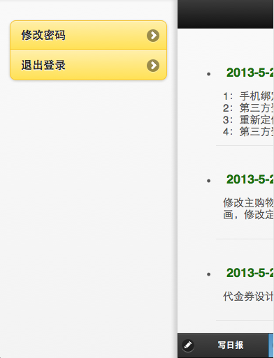

介绍
还在使用邮件或者word,excel之类的东西收发日报吗，太不方便了，赶快使用“一天”日报系统吧。
一天日报是一个开源的写日报工具，包含了网页版和手机版。它可以部署在自己公司的服务器上，这样公司员工可以在任何地点书写自己的日报和浏览日报。
一天日报提供了丰富的文字编辑能力，让你可以随心所欲的书写出各种格式的文本，手机版目前只提供简单的书写。日报会按照时间顺序归类在一起，方便你日后对以往工作的回顾。
截图
我的日报界面
下属的日报界面

编辑部门界面

{kind=link}
创建新用户界面

手机版写日报界面

手机版下属日报界面

手机版设置界面

安装
安装Node.js和redis数据库，安装完成后下载源代码并解压缩到你的网站根目录，使用命令行工具进入该目录，然后输入
$ npm install
将会安装依赖的库文件(确保你有管理员权限可以安装库文件），安装完成后，打开根目录下的config.js文件设置数据库信息和网站端口号。 exports.db对象是数据库配置exports.sessiondb是seesion数据库的数据库配置，seesion信息都存在redis数据库中，exports.app 对象中的 port属性表示网站端口号，默认是80端口。配置设置好后执行
$ node app.js
或者后台执行$ nohup node app.js
看到输出'Express server listening on port '80' 则表示服务器启动成功（这里的端口号80会和你在config.js中的exports.app.port保持一致） 。浏览器地址栏输入http://你的域名/install,会看到设置默认管理员账户成功页面，按照提示进入网站登陆界面，输入管理员账户名 adminn,密码1234567则可以登陆成功。 进入管理后台设置部门，然后建立新用户，把建立好的用户名和密码告知用户，用户使用用户名和密码登陆系统就可以写日报和查看日报了。手机版访问地址是：http://你的域名/m。为了安全，默认管理员账户建立成功后打开/routes/ruteProfile.js文件注释掉app.get('/install', installer.install)语句，这样可以删除安装程序，不可以再创建默认管理员账户。
支持和bug发送
有任何疑问和bug请发送到 walterribao@126.com邮箱